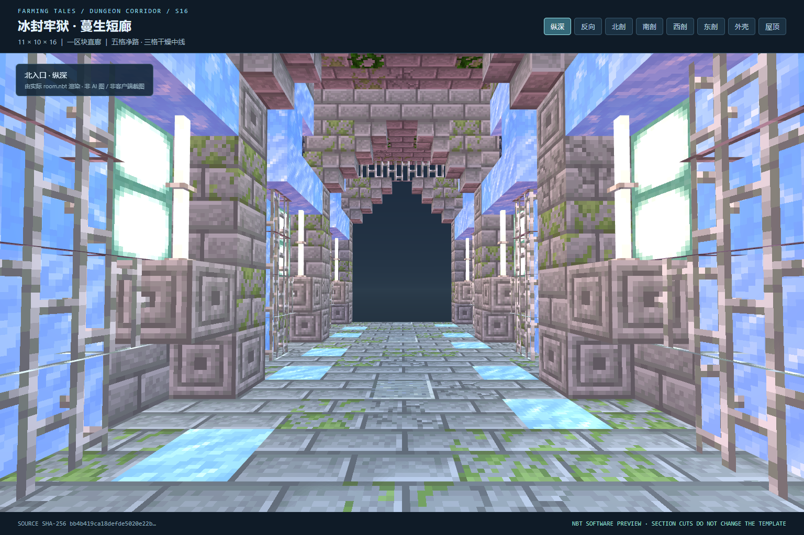

FARMING TALES / INDEPENDENT DELIVERY / CORRIDOR-S16
冰封牢狱 · 蔓生短廊
保留参考图的霜蓝牢窗、冷灰拱肋、苔痕与藤蔓，压缩为一段可直接拼接的短直廊。以下图片均来自实际 NBT 软件渲染，非 AI 概念图、非客户端截图。
11 × 10 × 16一区块长度，南北一字贯通
5 格净路 / 3 格干燥中线双端开放，无转弯、分岔和楼梯
独立候选 · 未部署验收状态和完整指纹以 qa.json 为准

四向内部剖视与完整外壳
剖切只影响渲染副本；最终结构完整保留屋顶、两侧外墙、支撑与灯具。详细图像与检查报告保存在本交付目录。